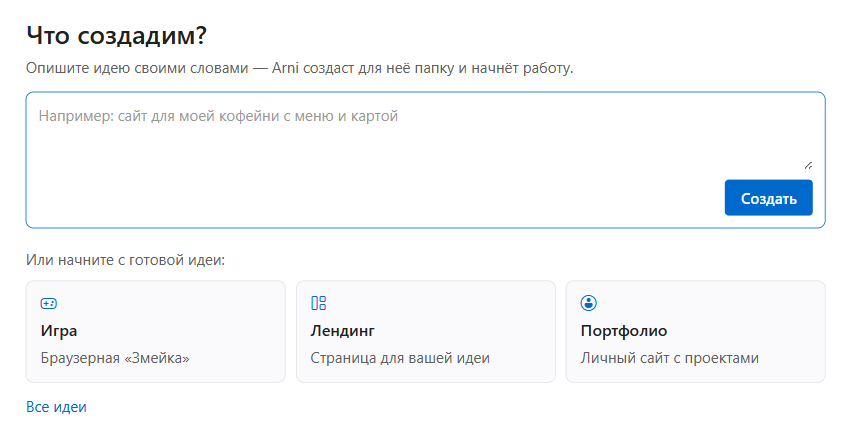

Arni Code — редактор кода с ИИ-агентом на русском языке. Вам не нужно уметь программировать: напишите, что хотите получить, и агент создаст файлы и проверит, что всё работает.
Бесплатно. Вход через Яндекс ID или VK. macOS и Linux пока нет.

Без настройки окружения и без знания языков программирования.
Напишите на русском, что нужно: сайт, калькулятор, бот, небольшую игру.
Arni создаёт файлы проекта прямо в вашей папке и показывает, что делает.
Откройте результат, попросите изменить — и агент внесёт правки.
Привычный редактор VS Code внутри, но первый экран сделан для тех, кто раньше не писал код.
Интерфейс агента и подсказки на русском языке с первого запуска.
Войдите через Яндекс ID или VK. Карта и регистрация на зарубежных сервисах не нужны.
Основа — Code-OSS. Когда захотите разобраться в коде, всё уже под рукой. Исходники открыты.
Редактор работает всегда. Ограничен только ИИ-агент.
Установщик пока не подписан сертификатом, поэтому Windows может показать предупреждение. Это ожидаемо.
Файл установщика со страницы релизов на GitHub.
Если появилось «Windows защитила ваш компьютер», нажмите «Подробнее», затем «Выполнить в любом случае».
Откройте Arni Code и войдите через Яндекс ID или VK.
Нет. Первый экран рассчитан на тех, кто никогда не писал код: вы описываете задачу словами.
В бесплатном тарифе — бесплатные модели через OpenRouter. Список может меняться, поэтому мы не привязываем страницу к конкретной модели.
Проект создаётся в папке на вашем компьютере. Текст запросов и нужный для ответа контекст отправляется через наш сервер к провайдеру модели.
Arni Code построен на открытом Code-OSS, но с русским интерфейсом, простым стартовым экраном и встроенным агентом.
Пока сроков нет. Сейчас доступна только версия для Windows.